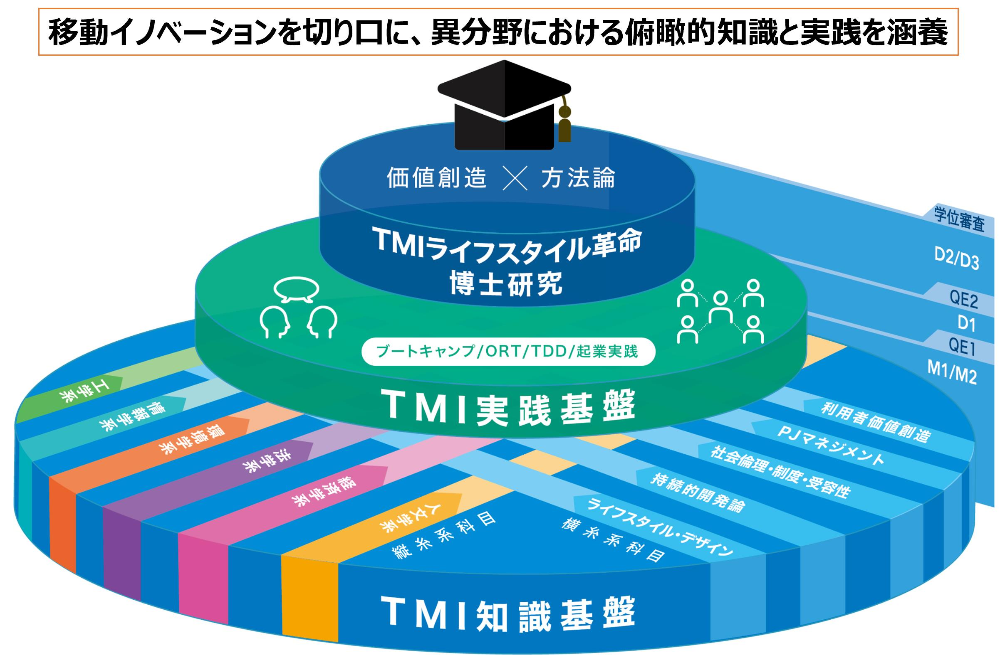
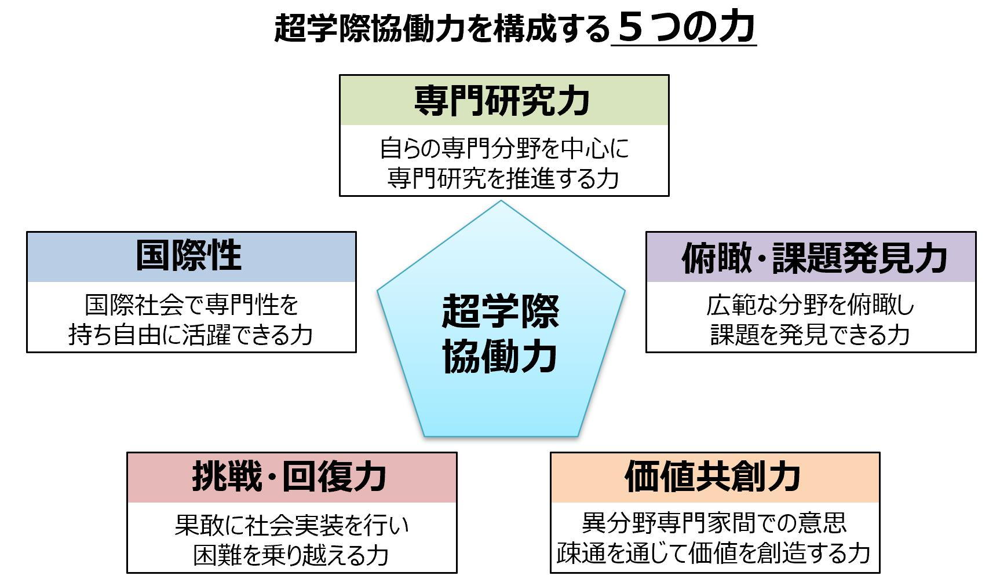

卓越大学院プログラムは、文部科学省が2018年から推進している大学院改革プログラムで、5年一貫の博士課程を通じて、様々な分野における「知のプロフェッショナル」の育成を目指しています。2018年～2020年の3年間に募集され、全国で30の卓越大学院が採択されています。名古屋大学では、そのうち4つのプログラムが運営されています。
近年の「移動革命」とも呼ばれる技術革新は、時間・空間の移動コストを最小化する産業革命以来の社会変革を創出していますが、社会課題が複雑化し、さらに価値基準も多様化する中で、技術先導型の「豊かなライフスタイルの実現」は困難になりつつあります。ライフスタイル革命の牽引には、人文・社会科学、工学、情報学、環境学などの異分野(Multidisciplinary)の専門家でチームを組み、互いの専門を理解・尊重しつつ、ライフスタイルの多様な「価値を創造」し、その「技術・方法論」の構築により社会への橋渡し(Translation)が可能な、超学際的(Transdisciplinary)な人材が必要です。本プログラムでは、本学が民間企業と共に取組む産学共創教育に加え、６研究科・７センターが相互の力を結集して専門家チームによる超学際協働力を涵養する卓越したカリキュラムを構造化しています。これにより「移動」を豊かな方向性をもった社会的価値に昇華する取組に貢献できる「超学際移動イノベーション人材」を養成します。
本プログラムでは、超学際協働による移動イノベーション（以下TMI: Transdisciplinary Mobility Innovation）を行うために必要な知識と実践を、3階層の超学際型カリキュラムとして構造化しています。もっとも基礎となる「TMI知識基盤」は、履修生の基礎に応じて選択でき、専門分野を学ぶ縦糸系科目と、異なる分野を繋ぐ横糸系科目により、超学際協働に必要な基盤知識を学ぶ「縦糸・横糸型コースワーク」、異分野教員間の異なる視点を学ぶ「超学際教員討論型講義」、移動に関する基盤知識を学ぶ「移動イノベ共通講義」から構成されています。「TMI実践基盤」は、：合宿形式での緊密なチーム型連携により超学際協働力を涵養する「ブートキャンプ」、自治体などの現場に行き、調査研究を行うORT (On-site Research Training)、実証実験の基盤となる「テストベッド」を企業メンターと共に学内外に協働で設計・開発するTDD (Testbed Design and Development)、履修生間でチームを組みベンチャー設立を企画・実践する「起業実践」から構成されています。「TMIライフスタイル革命博士研究」では、自らの専門分野に加え、産学共創研究など、超学際協働に基づくライフスタイル革命における「価値創造」と「方法論」に着目した博士論文研究を実施します。特に、本学が推進する「産学共創教育」では、民間企業との共同研究を通じ「知のプロフェッショナル」としての力を養います。

プログラム履修生は、カリキュラムの履修を通じ、超学際協働力を構成する5つの力を涵養します。５つの力とは、自身の分野における専門研究力、価値を社会システムに昇華させるために必要な俯瞰・課題発見力、異分野専門家間でコミュニケーションを通じて価値を創造する価値共創力、果敢に社会実装を行い困難を乗り越える挑戦・回復力、そして国際社会で活躍できる国際性です。本プログラムを修了した超学際移動イノベーション人材は、社会の広範な分野において、ライフスタイル革命のための研究者・技術者・起業家・事業家・行政官などの職業で活躍が期待されます。

１期生の募集は終了しました（2020年11月11日〆切）。
２期生については、2021年2月ごろに募集開始を行う予定です。
名古屋大学
東山キャンパスNIC館608
TEL：052-788-6114
受付：9:00〜17:00
E-mail:
tmi@mirai.nagoya-u.ac.jp